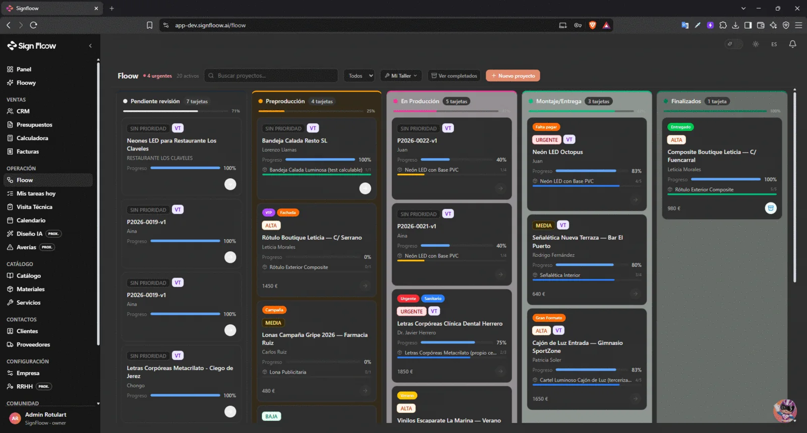
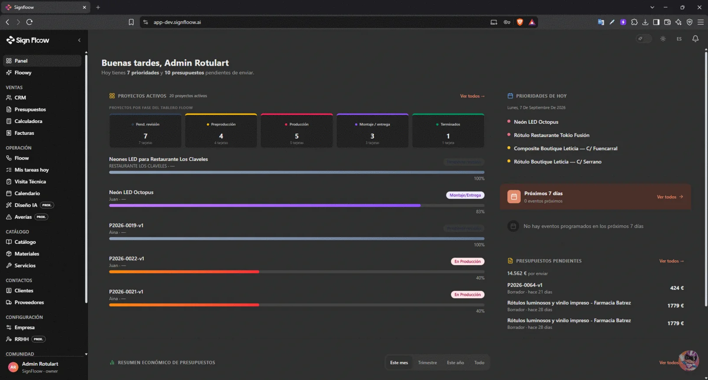
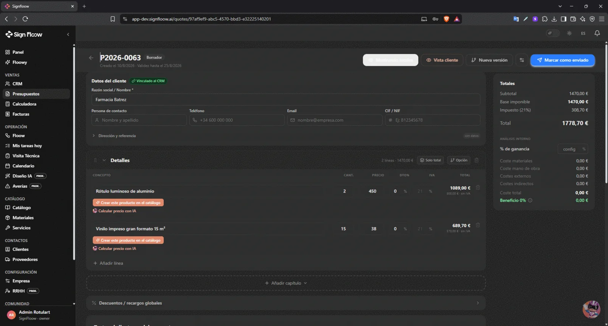
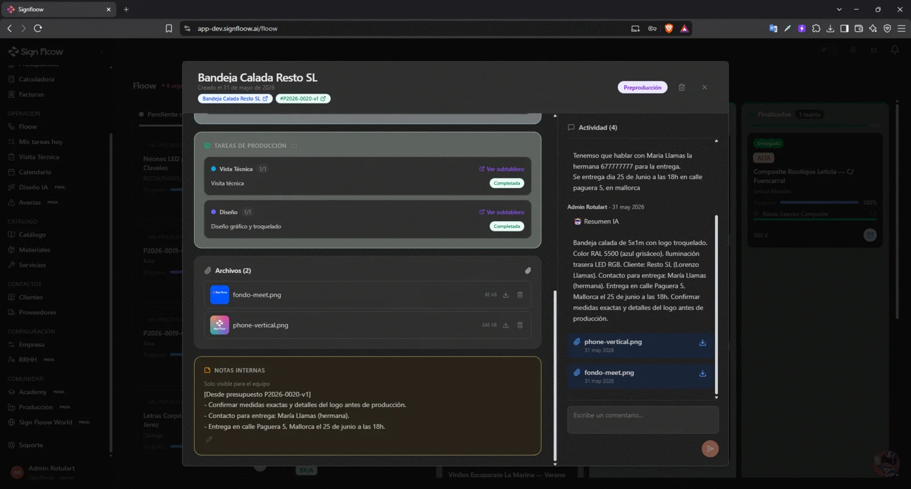
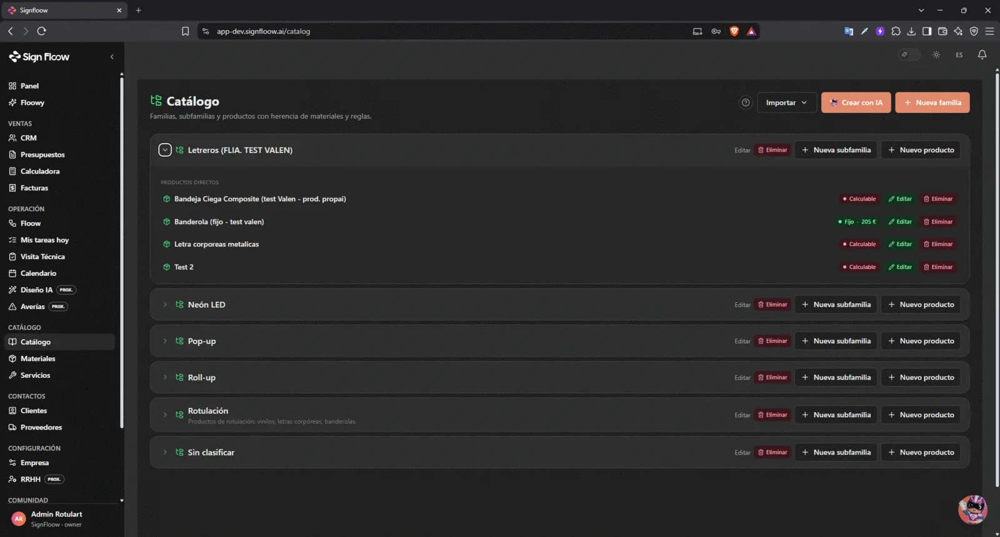
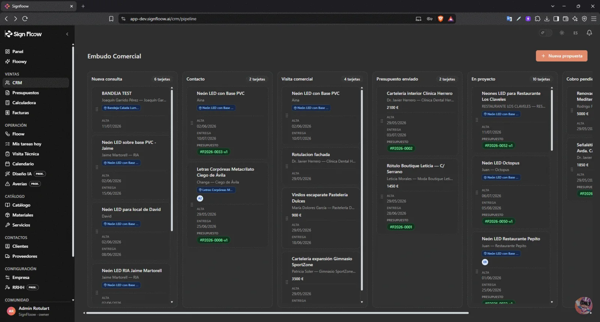
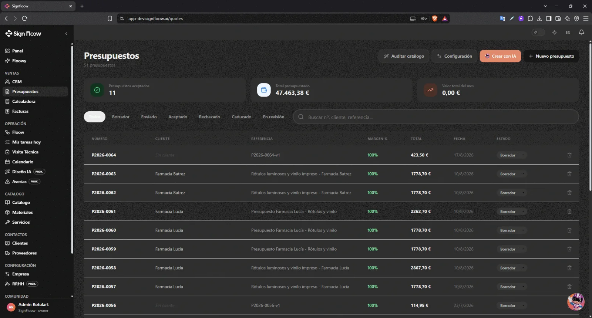
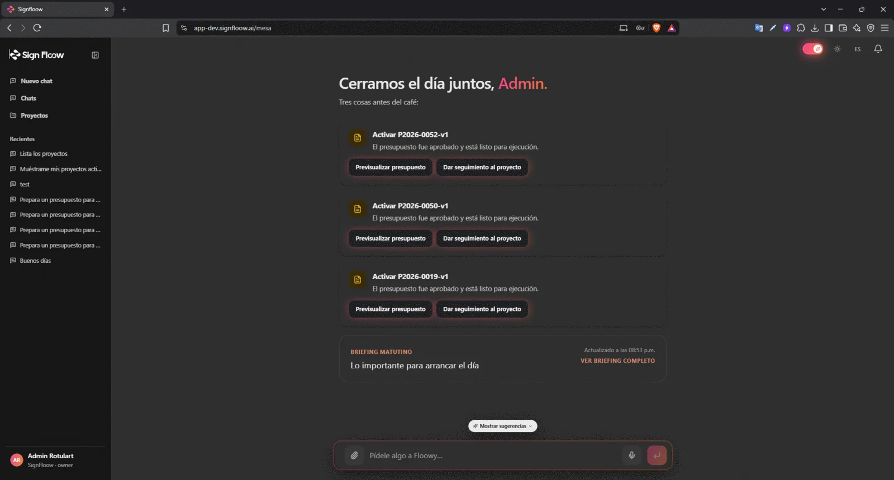

SignFloow
SaaS para empresas de rotulación: reemplaza planillas y mensajes por un tablero de producción, un catálogo con recetas de fabricación, presupuestos calculados por fórmulas y un asistente de IA que consulta los datos reales del negocio.
- 1.551+tests automatizados
- ~90%de cobertura
- ~130pull requests








El tablero de producción: cinco fases, una tarjeta por proyecto y el avance de cada tarea.
El panel de inicio: proyectos por fase, prioridades del día y presupuestos pendientes de enviar.
Detalle de un presupuesto: líneas, impuestos y análisis interno de costes y margen.
Ficha de proyecto: tareas de producción, archivos, notas internas y un resumen generado por IA.
El catálogo: familias, subfamilias y productos con herencia de materiales y reglas. Cada producto puede ser de precio fijo o calculable.
El embudo comercial, desde la consulta nueva hasta el cobro pendiente.
El listado de presupuestos, con el estado y el margen de cada uno.
Floowy, el asistente de IA: propone acciones concretas sobre los datos del taller.
Tocá una captura para verla grande
El problema
Los talleres del rubro manejan proyectos, materiales y presupuestos entre planillas, mensajes y memoria. Nadie sabe con certeza cuánto cuesta un trabajo hasta que ya se hizo.
Proyectos, materiales y presupuestos entre planillas, mensajes y memoria. Nadie sabía cuánto costaba un trabajo hasta terminarlo.
Un tablero con el estado real de cada proyecto y presupuestos calculados por fórmula antes de empezar.
Lo que construí
- Tablero multi-empresa con cinco fases, subtableros por taller y descomposición automática del proyecto en tareas de producción.
- Motor de presupuestos con fórmulas, capítulos, tarifas de mano de obra y costes indirectos.
- Enlace público de aceptación que, al aceptarse, crea el proyecto en el tablero.
- Catálogo con lista de materiales por dimensión y 91 materiales preconfigurados del rubro.
- Asistente de IA con acceso a herramientas sobre los datos de cada empresa, con dos proveedores y conmutación automática.
- Control de acceso por rol y aislamiento total entre empresas.
- Infraestructura como código y despliegue automatizado sin credenciales estáticas.